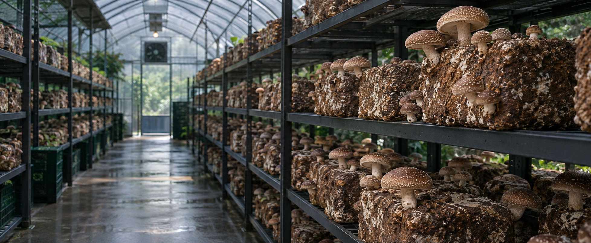

입식 전 준비
청소·소독, 동선 분리, 장비와 배지 상태를 점검합니다.

현장 실습자료 · 초급
입식 전 점검부터 발이·생육·수확·휴양까지, 하우스 안에서 오늘 확인할 기준을 순서대로 익힙니다.
01부터 시작하기교육 목표
같은 하우스라도 품종, 배지 크기, 입식량과 계절에 따라 반응이 다릅니다. 이 자료의 수치는 출발점으로 사용하고, 종균·배지 공급처의 품종별 지침과 현장 기록을 함께 확인하세요.
청소·소독, 동선 분리, 장비와 배지 상태를 점검합니다.
수분 자극과 온도·습도·빛을 맞춰 균일한 원기를 유도합니다.
과습을 피하고 환기와 관수를 조절해 단단한 갓을 만듭니다.
적기에 수확하고 배지를 쉬게 한 뒤 다음 주기를 준비합니다.
환경 관리 실습
아래 단계를 눌러 목표 범위와 관찰 포인트를 비교하세요. 수치는 일반적인 교육 기준이며, 실제 설정은 품종별 발생온도와 배지업체 지침을 우선합니다.
실내 공기보다 배지 내부가 더 뜨거울 수 있습니다. 배지 사이에 공기가 흐르도록 간격을 두고, 녹색·검은색 오염과 이상 발열을 매일 확인합니다.
핵심: 실내 온도만 보지 말고 대표 배지의 중심 온도를 함께 기록하세요.
표준 작업 흐름
바닥·선반·배수로를 청소하고 충분히 건조합니다. 방충망, 가습기, 환풍기, 온습도 센서의 작동을 확인합니다.
배지 생산일·품종·로트를 기록하고, 찢김·악취·잡균색이 보이는 배지는 즉시 분리합니다. 벽과 바닥에 닿지 않게 배열합니다.
완숙배지에 품종 지침에 맞는 수분 자극을 주고 초기 건조를 막습니다. 원기가 고르게 보이면 직접 살수를 줄이고 공중습도를 관리합니다.
과도한 원기는 품질 저하를 부를 수 있습니다. 건전한 개체를 남기고 환기해 대가 길어지거나 갓이 물러지는 것을 막습니다.
갓이 충분히 펴지기 전, 자루 밑동을 잡아 비틀어 잔여물이 적게 남도록 수확합니다. 상품·비상품을 바로 구분하고 신속히 예냉합니다.
수확 잔여물을 제거하고 배지를 건조 상태로 쉬게 합니다. 일반 예시로 20℃에서 10–15일 휴양 후 약 24시간 침수하지만, 배지 상태와 품종 지침을 우선합니다.
30분 현장 실습
한 구역을 정해 위에서 아래, 입구에서 안쪽 순서로 봅니다. 완료한 항목을 표시하면 실습 진도가 자동으로 계산됩니다.
증상별 판단
원인을 단정하지 말고 온도·습도·환기·관수 기록을 먼저 비교하세요. 오염 의심 배지는 정상 구역에서 열거나 흔들지 않습니다.
발이 후 직접 살수나 공중습도가 과한지 확인합니다. 버섯 표면의 물방울을 말리고 환기를 짧게 늘리되, 배지 자체가 마르지 않게 관찰합니다.
공기 정체와 낮은 조도를 확인합니다. 선반 안쪽까지 공기가 흐르는지 보고, 생육 기간 약 150–200 lx 수준의 빛이 고르게 닿는지 측정합니다.
상대습도 급락, 강한 직풍, 관수 간격을 확인합니다. 가습량을 한꺼번에 올리기보다 작은 폭으로 조정하고 30분 뒤 다시 봅니다.
다른 배지보다 먼저 만지지 말고 봉투째 분리합니다. 사용한 장갑과 도구를 교체·소독하고 주변 배지에 같은 증상이 번지는지 표시해 관찰합니다.
입구·중앙·안쪽, 상·중·하단의 값을 비교합니다. 단일 센서 값으로 판단하지 말고 선반 간격과 팬 방향을 함께 점검합니다.
방충망 틈과 배수구, 폐배지 보관 위치를 점검합니다. 끈끈이트랩으로 발생 위치를 기록하고, 방제는 등록 약제와 표시사항을 반드시 따릅니다.
위생·안전
정상 구역에서 오염 의심 구역 방향으로 이동하고, 되돌아갈 때는 장갑·장화·도구를 교체하거나 소독합니다.
관수 뒤 통로의 고인 물을 즉시 제거하고 호스는 통로 밖에 둡니다.
젖은 손으로 플러그를 만지지 말고 누전차단기와 방수 덮개를 확인합니다.
소독제·방제약은 라벨 희석배수와 보호구를 지키며 임의 혼용하지 않습니다.
배지 상자는 몸 가까이 들고 허리보다 무릎을 굽혀 옮깁니다. 무리하면 2인 1조로 작업합니다.
마무리 확인
정답이라고 생각하는 항목을 누르세요.